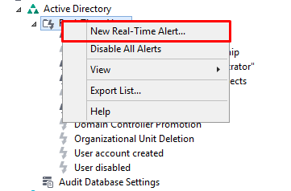
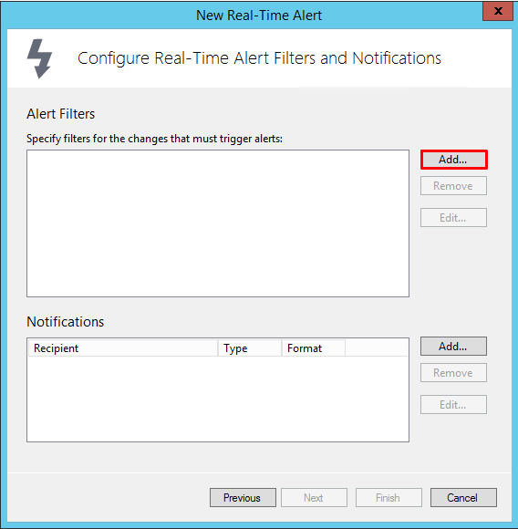
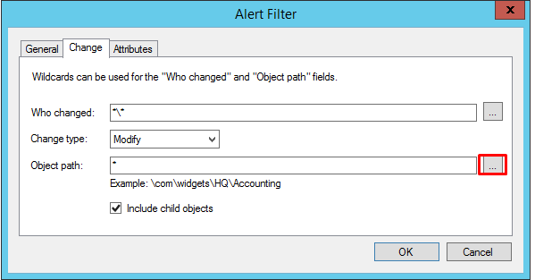
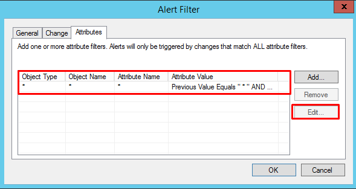
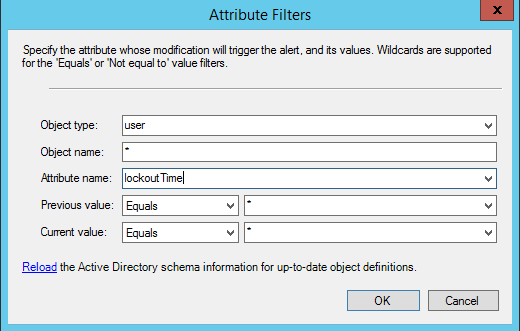

Information on how to setup an account lockout alert in Netwrix Auditor - Active Directory.
1. Select New Real-Time Alert by clicking on Real-Time Alert and then right-clicking on Real-Time Alert
1. Select New Real-Time Alert by clicking on Real-Time Alert and then right-clicking on Real-Time Alert

2. Name Alert then Click the Next button. Click Add to add the alert filters needed

3. Here, if you would like to see lockouts for a specific OU, select the highlighted box.
This can also be left as * for a wildcard to monitor all user account lockouts.

4. Select the existing attribute filter that is added by default and select "Edit"

5. Place in the following attribute filters to see all account lockouts

6. Hit "OK" and follow the rest of the prompts for filling in the specified e-mail address
the alert will go to.